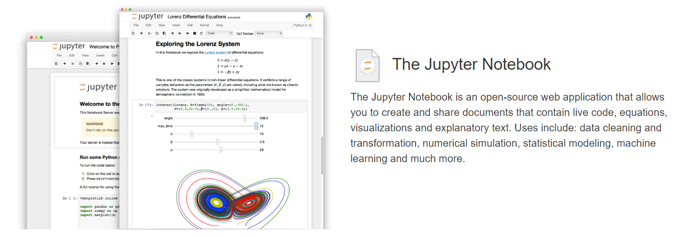

The IPython Notebook, now called Jupyter Notebook, is a convenient and interactive Web application for fast prototyping and testing ideas in Python (and R, Julia , Scala, and others) in the Web browser.

Installing it on Ubuntu is easy, but it takes a little bit more effort to deploy it on a server and have it run as a service. This article serves as a simple guide to deploy Jupyter in a Ubuntu server, using the Nginx Web server and the supervisor system.
Installing Jupyter
Detailed installation instructions for Jupyter can be found here. Firstly, Python 2.7 or 3.3 or above should be installed. If you are using Ubuntu 14.04, it already comes with Python 3.4, and if you are using Ubuntu 16.04, it comes with Python 3.5. Here we assume that you normally use Python 3 as the default kernel. You can then install Jupyter using the following command, which would also install the dependencies. To have the latest version installed, you can first check and upgrade your pip to the latest version:
$ sudo pip3 install --upgrade pip
$ sudo pip3 install jupyter
Installing Additional Kernels
Installing Jupyter using the above commands will have the Python 3 kernel installed as well. If you would like to run Python 2 in the notebooks, you can install the Python 2 kernal as well (see here for detailed instructions):
$ sudo pip2 install ipykernel
$ sudo python2 -m ipykernel install --user
In fact, Juputer supports a large number of kernels, such as R, Scala and Octave. For example, the Octave kernel can be installed through pip:
$ sudo pip3 install octave_kernel
$ sudo python3 -m octave_kernel.install
Jupyter Configurations
Once installed, you can run the Jupyter notebook server using the following command:
$ jupyter notebook
The above command allows you to run the notebook server in your local computer, and by default will run on port 8888. You will be able to see the Jupyter notebook by accessing http://localhost:8888/.
However, if you would like to install Jupyter notebook on your server (e.g. an instance on AWS or Google Cloud), it is better to deploy it properly so that you can access it through the commonly used HTTP ports (i.e. 80 for http or 443 for https), and have it automatically restarted in case it has stopped for some reasons. Hence, we will discuss how to deploy it on a server before. However, firstly, let’s take a look at how we can configure Jupyter.
The Jupyter notebook can be configured with many different options. We can create a configuration file with all the default configurations commented out using the following command:
$ jupyter notebook --generate-config
By default, the configuration file jupyter_notebook_config.py will be generated under the .jupyter folder under your home directory. The configuration file is well commented and should be self explanatory. Below are some commonly used options that you should set before going forward.
c.NotebookApp.notebook_dir = '/path/to/notebook_directory'
c.NotebookApp.base_url = 'http://www.yourdomain.com/notebok'
c.NotebookApp.password = '...'
c.NotebookApp.port = 8888
c.NotebookApp.port_retries = 50
Note that the base_url parameter should match with the path set in Nginx later, so as the port number.
Also, you can follow the instructions in Jupyter’s documentation (reproduced below) to obtain the password string for the option above.
In [1]: from notebook.auth import passwd
In [2]: passwd()
Enter password:
Verify password:
Out[2]: 'sha1:67c9e60bb8b6:9ffede0825894254b2e042ea597d771089e11aed'
As for the port option (c.NotebookApp.port), you can set it to whichever port you prefer, as we will set up Nginx as a reverse proxy to redirect requests to yor notebook server. In the discussion below, we assume that you have set the port number to 8888 as above.
Nginx Reverse Proxy
Nginx is an event-driven based HTTP and reverse proxy server. It has recently gained much popularity because of its functionality and performance. In this guide, we will install Nginx as a Web server listening for HTTP requests on port 80, and will redirect requests to port 8888 if they are for the Jupyter Server.
Firstly, install Nginx using the command below:
$ sudo apt-get update
$ sudo apt-get install nginx
Once installed, we can configure the Web server by editing the configuration file at /etc/nginx/site-enabled/default. Add the following block inside the server block.
```
location /notebook {
proxy_pass http://localhost:8888;
proxy_set_header X-Forwarded-For $proxy_add_x_forwarded_for;
proxy_set_header X-Real-IP $remote_addr;
proxy_set_header Host $http_host;
proxy_http_version 1.1;
proxy_redirect off;
proxy_buffering off;
proxy_set_header Upgrade $http_upgrade;
proxy_set_header Connection "upgrade";
proxy_read_timeout 86400;
}
```
In the above configuration, we ask Nginx to redirect all requests to the path /notebook to the port 8888 on localhost. This is where we will execute the Jupyter notebook. Also, the Upgrade header parameters are there so that the Websocket functions will work properly in Jupyter.
Once updated the configuration file, you can restart Nginx by using the following command:
$ sudo service nginx restart
Supervisor for Monitoring the Service
Finally, we will execute Jupyter notebook on port 8888 with the configurations. You can of course simply use the command jupyter notebook to execute Jupyter, but we would like to run it more like a service or daemon in the background, and ask it to restart whenever something wrong happens and it is killed by the OS.
For this purpose, we will use supervisor, which is a process control system for monitoring and controlling processes in UNIX-like OS. To install supervisor, you can run:
$ sudo apt-get install supervisor
After that, you can check if the supervisor daemon is running, you can do the following:
$ sudo supervisorctl
supervisor>
If you see the prompt, that means it is installed and running successfully. Otherwise, you can start the service by yourself:
$ sudo service supervisor start
To ask supervisor to monitor and control our Jupyter notebook, we need to first create a configuration file and place it in the /etc/supervisor/conf.d. Below is an example of the configuration file (which must be named with .conf extension):
[program:jupyter]
command = jupyter notebook --no-browser --config=/path/to/config_file
directory = /path/to/jupyter/notebook/folder
user = ubuntu
autostart = true
autorestart = true
stdout_logfile = /path/to/log_file
redirect_stderr = true
After saving the configuration file to the directory /etc/supervisor/conf.d, you can ask supervisor to read the configuration file and start the program:
$ sudo supervisorctl reread
$ sudo supervisorctl update
If the service is successfully configured and started, you can see something like the following when you execute the supervisorctl command without any parameters:
$ sudo supervisorctl
jupyter RUNNING pid 1234, uptime 0:00:05
supervisor>
You should now be able to access your Jupyter notebook at the URL `http://www.yourdomain.com/notebook.